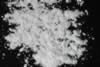

|
|
(For further information on spectroscopy, see:
http://speclab.cr.usgs.gov)
TITLE: Calcite WS272 DESCRIPT
DOCUMENTATION_FORMAT: MINERAL
SAMPLE_ID: WS272
MINERAL_TYPE: Carbonate
MINERAL: Calcite (Calcite group)
FORMULA: CaCO3
FORMULA_HTML: CaCO3
COLLECTION_LOCALITY: Tunguska, Siberia, USSR
ORIGINAL_DONOR: Wards Scientific
CURRENT_SAMPLE_LOCATION: USGS Denver Spectroscopy Laboratory
ULTIMATE_SAMPLE_LOCATION: USGS Denver Spectroscopy Laboratory
SAMPLE_DESCRIPTION:
Forms series with Rhodochrosite. Trimorphous with Aragonite and Vaterite.
This sample was ground from a beautiful single crystal of type Iceland Spar. The single crystal appeared pure, and the visible-NIR spectrum appears pure.
See Clark, R.N., T.V.V. King, M. Klejwa, G. Swayze, and N. Vergo, 1990, High spectral resolution reflectance spectroscopy of minerals: J. Geophys Res. 12653-12680.
IMAGE_OF_SAMPLE:

END_SAMPLE_DESCRIPTION.
XRD_ANALYSIS:
Calcite + small amount of "other" -- by Norma Vergo However, there is no "other" apparent in the single crystals or the ground sample. -- Roger N. Clark
END_XRD_ANALYSIS.
COMPOSITIONAL_ANALYSIS_TYPE: None # XRF, EM(WDS), ICP(Trace), WChem
COMPOSITION_TRACE: None
COMPOSITION_DISCUSSION:
END_COMPOSITION_DISCUSSION.
MICROSCOPIC_EXAMINATION:
Bimodal grain size distribution:
population 1 450µm 85 vol%
population 2 15µm 15 vol%
avg. grain size of populations = 410µm
Pure sample from single crystal. Rhombic cleavage, twins, uniaxial, very high birefringence, fizzes readily in dilute HCl. Smaller grains adhere to larger grains covering 40-80% of larger grains cleavage surfaces.
END_MICROSCOPIC_EXAMINATION.
SPECTROSCOPIC_DISCUSSION:
END_SPECTROSCOPIC_DISCUSSION.
SPECTRAL_PURITY: 1a2a3a4a # 1= 0.2-3, 2= 1.5-6, 3= 6-25, 4= 20-150 microns
| LIB_SPECTRA_HED: | where | Wave Range | Av_Rs_Pwr | Comment |
|---|---|---|---|---|
| LIB_SPECTRA: | splib04a r 787 | 0.2-3.0µm | 200 | g.s.= 410 µm |
| LIB_SPECTRA: | splib05a r 1520 | 0.2-3.0µm | 200 | g.s.= |
| LIB_SPECTRA: | splib06a r 4159 | g.s.= | ||
| LIB_SPECTRA: | splib06a r 4172 | g.s.= |
{kind=link}